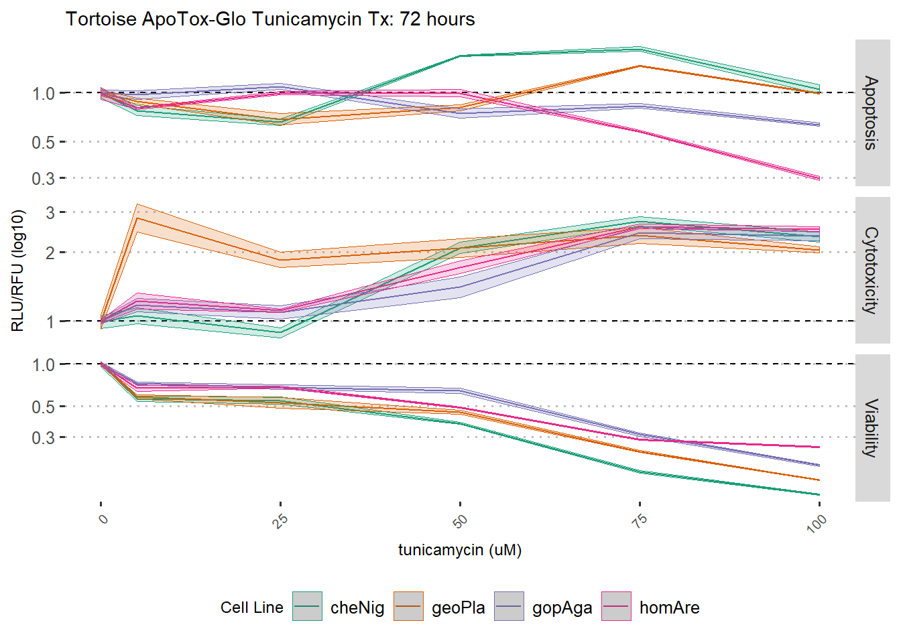

Last updated: 2019-05-30
Checks: 6 0
Knit directory: TortoiseLongevity/analysis/
This reproducible R Markdown analysis was created with workflowr (version 1.3.0). The Checks tab describes the reproducibility checks that were applied when the results were created. The Past versions tab lists the development history.
Great! Since the R Markdown file has been committed to the Git repository, you know the exact version of the code that produced these results.
Great job! The global environment was empty. Objects defined in the global environment can affect the analysis in your R Markdown file in unknown ways. For reproduciblity it’s best to always run the code in an empty environment.
The command set.seed(20190515) was run prior to running the code in the R Markdown file. Setting a seed ensures that any results that rely on randomness, e.g. subsampling or permutations, are reproducible.
Great job! Recording the operating system, R version, and package versions is critical for reproducibility.
Nice! There were no cached chunks for this analysis, so you can be confident that you successfully produced the results during this run.
Great! You are using Git for version control. Tracking code development and connecting the code version to the results is critical for reproducibility. The version displayed above was the version of the Git repository at the time these results were generated.
Note that you need to be careful to ensure that all relevant files for the analysis have been committed to Git prior to generating the results (you can use wflow_publish or wflow_git_commit). workflowr only checks the R Markdown file, but you know if there are other scripts or data files that it depends on. Below is the status of the Git repository when the results were generated:
Ignored files:
Ignored: .RData
Ignored: .Rhistory
Ignored: .Rproj.user/
Ignored: analysis/.Rhistory
Ignored: analysis/figure/
Untracked files:
Untracked: analysis/tortoise_ATG_per.Rmd
Untracked: analysis/tortoise_etoposide.Rmd
Untracked: analysis/tortoise_paraquat.Rmd
Untracked: analysis/tortoise_peroxide.Rmd
Untracked: analysis/tortoise_tunicamycin.Rmd
Untracked: analysis/tortoise_tunicamycin.docx
Untracked: analysis/tortoise_tunicamycin_files/
Untracked: code/bats-ATG-paraquat.Rmd
Untracked: code/general_functions.R
Untracked: data/ATG/
Untracked: docs/figure/turtles_tunicamycin.Rmd/
Untracked: output/paraquat/
Untracked: output/peroxide/
Untracked: output/tortoise_etop_RTG.csv
Untracked: output/tortoise_paraq_RTG.csv
Untracked: output/tortoise_perox_RTG.csv
Untracked: output/tortoise_tunic_RTG.csv
Untracked: output/tunicamycin/
Untracked: tort_ATG_per.jpeg
Untracked: tort_RTG_per6.jpeg
Untracked: writeup_stress_response.Rmd
Unstaged changes:
Modified: _workflowr.yml
Deleted: analysis/turtles_etoposide.Rmd
Deleted: analysis/turtles_paraquat.Rmd
Deleted: analysis/turtles_peroxide.Rmd
Deleted: analysis/turtles_tunicamycin.Rmd
Note that any generated files, e.g. HTML, png, CSS, etc., are not included in this status report because it is ok for generated content to have uncommitted changes.
These are the previous versions of the R Markdown and HTML files. If you’ve configured a remote Git repository (see ?wflow_git_remote), click on the hyperlinks in the table below to view them.
| File | Version | Author | Date | Message |
|---|---|---|---|---|
| Rmd | 924068e | Stephanie Bulls | 2019-05-30 | Analysis runs from start to finish |
# Actively bound
library(tidyverse)Warning: package 'tidyverse' was built under R version 3.5.3-- Attaching packages ----------------------------------------------------------------------------------------------------------- tidyverse 1.2.1 --v ggplot2 3.1.1 v purrr 0.3.2
v tibble 2.1.1 v dplyr 0.8.0.1
v tidyr 0.8.3 v stringr 1.4.0
v readr 1.3.1 v forcats 0.4.0 Warning: package 'ggplot2' was built under R version 3.5.3Warning: package 'tibble' was built under R version 3.5.3Warning: package 'tidyr' was built under R version 3.5.3Warning: package 'readr' was built under R version 3.5.3Warning: package 'purrr' was built under R version 3.5.3Warning: package 'dplyr' was built under R version 3.5.3Warning: package 'stringr' was built under R version 3.5.3Warning: package 'forcats' was built under R version 3.5.3-- Conflicts -------------------------------------------------------------------------------------------------------------- tidyverse_conflicts() --
x dplyr::filter() masks stats::filter()
x dplyr::lag() masks stats::lag()options(readr.num_columns = 0)
library(magrittr)Warning: package 'magrittr' was built under R version 3.5.3
Attaching package: 'magrittr'The following object is masked from 'package:purrr':
set_namesThe following object is masked from 'package:tidyr':
extractlibrary(ggpubr)Warning: package 'ggpubr' was built under R version 3.5.3library(reshape2)Warning: package 'reshape2' was built under R version 3.5.3
Attaching package: 'reshape2'The following object is masked from 'package:tidyr':
smithslibrary(RColorBrewer)source("../code/general_functions.R")treatments= c(0,5,25,50,75,100)
treatment.list = rep(treatments,times=2)
control.list = as.character(rep(0, 12))
lookup.treatment = list(
"A"= treatment.list,
"B"= treatment.list,
"C"= treatment.list,
"D"= treatment.list,
"E"= treatment.list,
"F"= treatment.list,
"G"= treatment.list,
"H"= treatment.list
)
lookup.treatment.control = list(
"A"= control.list,
"B"= control.list,
"C"= control.list,
"D"= control.list,
"E"= control.list,
"F"= control.list,
"G"= control.list,
"H"= control.list
)
lookup.cellline <- list(
"HA_GA_GP_CN" = list(
"A"= rep(c("homAre","geoPla"), each=6),
"B"=rep(c("homAre","geoPla"), each=6),
"C"= rep(c("homAre","geoPla"), each=6),
"D"=rep(c("homAre","geoPla"), each=6),
"E"=rep(c("gopAga","cheNig"), each=6),
"F"= rep(c("gopAga","cheNig"), each=6),
"G"= rep(c("gopAga","cheNig"), each=6),
"H"= rep(c("gopAga","cheNig"), each=6)
)
)
lookup.passage <- list(
"HA_GA_GP_CN" = list(
"A"= rep(c(11, 10), each = 6),
"B"= rep(c(11, 10), each = 6),
"C"= rep(c(11, 10), each = 6),
"D"= rep(c(11, 10), each = 6),
"E"= rep(11, 12),
"F"= rep(11, 12),
"G"= rep(11, 12),
"H"= rep(11, 12)
)
)tort.tunic.time <- dir(
path="../data/ATG/tunicamycin",
full.names = T,
pattern = "(6|12|24|48|72)h"
) %>%
set_names(.,basename(.))
tort.tunic.time.plates <- tort.tunic.time %>%
lapply(
.,
function(x){
x %>%
dir(path=., full.names = T) %>%
setNames(., basename(.))
})
tort.tunic.files <- tort.tunic.time.plates %>%
lapply(
.,
function(time){
time %>%
lapply(
.,
function(plate){
plate %>%
list.files(path=., pattern="Step[126].*.csv", full.names=T)
}
)
})
tort.tunic.df <- suppressWarnings(
tort.tunic.files %>%
lapply(
names(.),
function(time, btf){
lapply(
names(btf[[time]]),
function(plate, t, files){
a = list(
Viability=read_csv(files[[plate]][[1]],col_names = TRUE),
Cytotoxicity=read_csv(files[[plate]][[2]],col_names = TRUE),
Apoptosis=read_csv(files[[plate]][[3]],col_names = TRUE)
)
lapply(
names(a),
function(test, df, timepoint, p){
df[[test]] %>%
reshape_96_wellplate(., value_name = "Value", Time=timepoint, Test = test, Drug="tunicamycin") %>%
assign_attr_by_well(., cell_line = lookup.cellline[[plate]], passage = lookup.passage[[plate]], Treatment = lookup.treatment, Vehicle = lookup.treatment.control) %>%
normalize_by_vehicle() %>%
arrange(cell_line, Treatment)
},
df = a,
timepoint = t,
p = plate
) %>%
bind_rows()
},
t=time,
files=btf[[time]]
) %>% bind_rows()
},
btf = .
) %>% bind_rows
) %>%
mutate(
Treatment = factor(Treatment, levels=treatments),
individual = cell_line,
cell_line = gsub('[[:digit:]]+', '', cell_line)
)
Attaching package: 'rlang'The following object is masked from 'package:magrittr':
set_namesThe following objects are masked from 'package:purrr':
%@%, as_function, flatten, flatten_chr, flatten_dbl,
flatten_int, flatten_lgl, flatten_raw, invoke, list_along,
modify, prepend, splicetort.tunic.df %>% pull(cell_line) %>% unique[1] "cheNig" "geoPla" "gopAga" "homAre"tort.tunic.full <- tort.tunic.df
#tort.tunic.fulldir.create("../output/tunicamycin", showWarnings = F)
tort.tunic.full %>% write_tsv(.,"../output/tunicamycin/tort.ATG.tunicamycin.tsv")species <- tort.tunic.full %>% pull(cell_line) %>% unique
species.passage <- tort.tunic.full %>% unite("sample", c("cell_line", "passage"), sep=", P", remove = F) %>% pull(sample) %>% unique
individual <- tort.tunic.df %>% pull(individual) %>% unique
individual.passage <- tort.tunic.df %>% unite("sample", c("individual", "passage"), sep=", P", remove = F) %>% pull(sample) %>% unique
species.colorScheme <- brewer.pal(length(species), "Dark2")
#species.colorScheme
species.colorScheme <- set_names(species.colorScheme, species)
species.passage.colorScheme <- colorRampPalette(species.colorScheme)(length(species.passage))
species.passage.colorScheme <- set_names(species.passage.colorScheme, species.passage)
individual.colorScheme <- colorRampPalette(species.colorScheme)(length(individual)) %>%
set_names(., individual)
individual.passage.colorScheme <- colorRampPalette(species.colorScheme)(length(individual.passage)) %>%
set_names(., individual.passage)fig6a <- tort.tunic.full %>%
#unite("sample", c("cell_line", "passage"), sep=", P", remove = F) %>%
mutate(sample=cell_line, Treatment=as.character(Treatment) %>% as.numeric) %>%
plot_ATG_curves(colorscheme = species.colorScheme) %>%
make_pretty_graph()+
labs(
title = "Tortoise ApoTox-Glo Tunicamycin Tx: 72 hours"
)
fig6a # + scale_x_log10()
plotly::ggplotly(fig6a)
sessionInfo()R version 3.5.2 (2018-12-20)
Platform: x86_64-w64-mingw32/x64 (64-bit)
Running under: Windows 10 x64 (build 17134)
Matrix products: default
locale:
[1] LC_COLLATE=English_United States.1252
[2] LC_CTYPE=English_United States.1252
[3] LC_MONETARY=English_United States.1252
[4] LC_NUMERIC=C
[5] LC_TIME=English_United States.1252
attached base packages:
[1] stats graphics grDevices utils datasets methods base
other attached packages:
[1] rlang_0.3.4 RColorBrewer_1.1-2 reshape2_1.4.3
[4] ggpubr_0.2 magrittr_1.5 forcats_0.4.0
[7] stringr_1.4.0 dplyr_0.8.0.1 purrr_0.3.2
[10] readr_1.3.1 tidyr_0.8.3 tibble_2.1.1
[13] ggplot2_3.1.1 tidyverse_1.2.1
loaded via a namespace (and not attached):
[1] tidyselect_0.2.5 xfun_0.6 haven_2.1.0
[4] lattice_0.20-38 colorspace_1.4-1 generics_0.0.2
[7] viridisLite_0.3.0 htmltools_0.3.6 yaml_2.2.0
[10] plotly_4.9.0 later_0.8.0 pillar_1.3.1
[13] glue_1.3.1 withr_2.1.2 modelr_0.1.4
[16] readxl_1.3.1 plyr_1.8.4 munsell_0.5.0
[19] gtable_0.3.0 workflowr_1.3.0 cellranger_1.1.0
[22] rvest_0.3.3 htmlwidgets_1.3 evaluate_0.13
[25] labeling_0.3 knitr_1.22 httpuv_1.5.1
[28] crosstalk_1.0.0 broom_0.5.2 Rcpp_1.0.1
[31] xtable_1.8-4 promises_1.0.1 scales_1.0.0
[34] backports_1.1.4 jsonlite_1.6 mime_0.6
[37] fs_1.3.0 hms_0.4.2 digest_0.6.18
[40] stringi_1.4.3 shiny_1.3.2 grid_3.5.2
[43] rprojroot_1.3-2 cli_1.1.0 tools_3.5.2
[46] lazyeval_0.2.2 crayon_1.3.4 whisker_0.3-2
[49] pkgconfig_2.0.2 data.table_1.12.2 xml2_1.2.0
[52] lubridate_1.7.4 assertthat_0.2.1 rmarkdown_1.12
[55] httr_1.4.0 rstudioapi_0.10 R6_2.4.0
[58] nlme_3.1-137 git2r_0.25.2 compiler_3.5.2